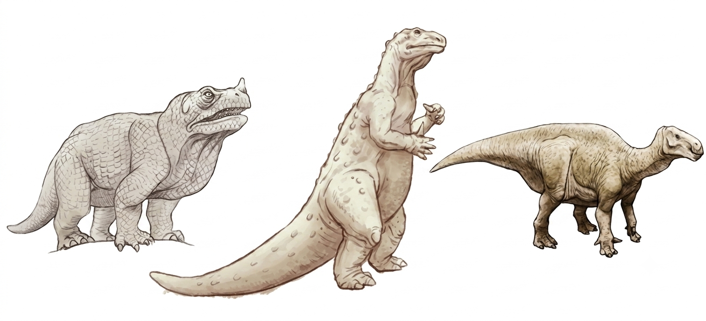
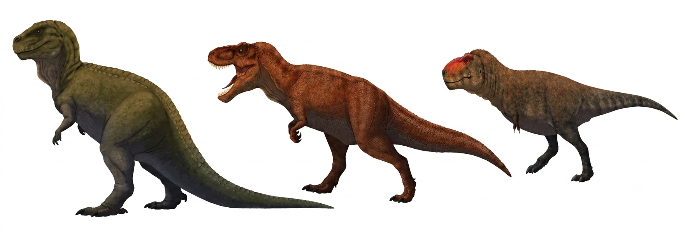
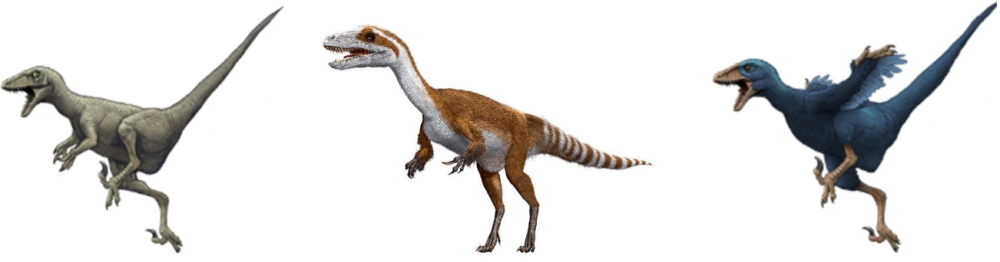
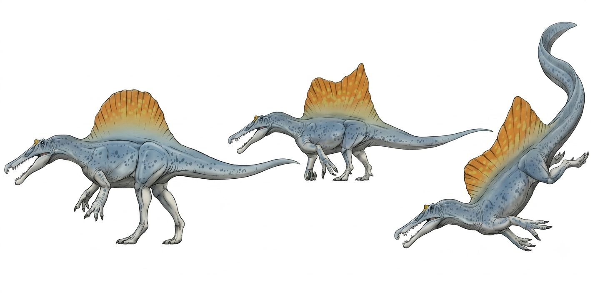

科学の歴史は、観測技術や理論の登場によって「常識」が塗り替えられてきた歴史です。本稿では、復元図が劇的に変わった恐竜の姿と、観測精度とともに数値が更新されてきた宇宙の年齢を手がかりに、認識の更新がどのような構造で起きてきたかを検討します。さらに、AIが同じ領域でどのような変化をもたらしうるかを、想像の範囲で考察します。
Ⅰ. 恐竜の姿：技術による精緻化と、前提の再検討
古生物学はかつて「化石を掘り出して分類する地質学の一分野」でした。現在では、化石を手がかりに絶滅生物の生態や地球環境の歴史を復元する科学へと変わっています。その転換を支えてきたのが、観測手法の進歩です。
1. 研究手法の変化：外形の観察から内部の解析へ
かつての研究は、化石の外形を観察・スケッチし、形態を比較して分類する「形態学的記載」が中心でした。現在は次のような手法が加わっています。
- CTスキャン：化石を壊さずに内部の骨や脳腔を3次元で復元できる。
- シンクロトロン放射光X線分析：微細構造や元素組成まで調べられる。
- メラノソーム解析：色素細胞の形状から羽毛の色彩を推定できる。
- 骨の成長線分析：代謝や成長速度の推定につながる。
2. 恐竜像の変遷：「鈍重な爬虫類」から「活動的な鳥の近縁」へ
初期の恐竜像は、ワニやトカゲの延長として、尾を引きずる動きの鈍い冷血動物と見なされていました。現在は鳥類の近縁として位置づけられ、羽毛、体色、温血に近い代謝をもつ姿が一般的な理解になっています。
| 時期 | 主な復元像 | 変化をもたらした要因 |
|---|---|---|
| 19世紀中期 | 巨大なトカゲやサイのような四足歩行の姿 | 断片的な骨のみで、現生爬虫類や哺乳類をモデルにした |
| 20世紀前半〜中期 | 尾を引きずり上体を起こす「カンガルー型」（ゴジラ型） | 直立姿勢は判明したが、冷血動物のイメージが強く残った |
| 1970年代〜 | 尾を水平に上げ、俊敏に走る前傾姿勢の温血動物 | 小型恐竜デイノニクスの発見を契機とする「恐竜ルネサンス」 |
| 1990年代〜現在 | 羽毛と科学的に裏付けられた体色をもつ姿 | 中国での羽毛恐竜化石の発見、メラノソーム解析 |
3. 復元図の時系列変遷
（1）19世紀中期：巨大なトカゲ・サイの時代
恐竜（Dinosauria）という概念の黎明期で、断片的な骨しか見つかっていませんでした。イグアノドンは、親指の骨を鼻の角と誤認したため、巨大なイグアナのような姿で復元されました（ロンドン・水晶宮の模型などが知られています）。

（2）20世紀前半〜中期：ゴジラ型の「直立・冷血」の時代
直立姿勢は判明していたものの、冷血で動きの鈍い動物というイメージが強く、ティラノサウルスは尾を引きずり沼地に潜む怪獣のように描かれました。

（3）1970年代〜：恐竜ルネサンスと「活動的な温血動物」
デイノニクスなどの発見を機に学説が大きく転換し、尾を水平に保ち、俊敏に走る前傾姿勢の動的な恐竜像が定着しました。
（4）21世紀〜現在：「羽毛と色彩」の時代
1996年に発見された羽毛恐竜シノサウロプテリクスなど、中国の化石群により、羽毛をもつ恐竜の姿が一般化しました。ティラノサウルス幼体の羽毛や、ミクロラプトルの光沢ある黒い羽も、この流れの中で示されています。


4. 前提そのものを問う視点
化石の微細構造を追うだけでなく、より大きな前提にも目を向ける必要があると指摘されています。たとえば、ブラキオサウルスやプテラノドンのような超大型生物が成立しえた当時の重力、大気密度、強風といった物理条件は、現在と同じだったとは限らない、という問いです。
Ⅱ. 宇宙年齢：観測精度の向上と、暫定モデルの更新
宇宙の年齢の推定も、観測機器と理論の進歩によって繰り返し更新されてきました。1930年代の約20億年から、現在の約138億年まで、数値は大きく変わっています。
1. 宇宙年齢推定の時系列変遷
| 時期 | 推定された宇宙年齢 | 主な根拠と背景 | 生じた問題・課題 |
|---|---|---|---|
| 1929年〜1930年代 | 約20億年 | ハッブルによる銀河の赤方偏移（宇宙膨張）の観測 | 地球の岩石の年齢（30億年超）より若いという矛盾（第一の宇宙年齢問題） |
| 1950年代 | 約100億〜200億年 | セファイド変光星の分類誤りの修正により、距離の物差しを補正 | 観測誤差が大きく、値を絞り込めず論争が続いた |
| 1990年代前半 | 約80億〜120億年 | ハッブル宇宙望遠鏡によるハッブル定数の測定 | 最古の球状星団の年齢（140億〜160億年）より若く、第二の宇宙年齢問題が発生 |
| 1998年 | 約130億〜140億年 | 遠方超新星の観測から、宇宙の加速膨張（ダークエネルギー）を発見 | 球状星団の年齢との矛盾が解消へ向かう |
| 2003年 | 137億年（±2億年） | WMAP衛星による宇宙マイクロ波背景放射（CMB）の全天観測 | ダークマターとダークエネルギーの割合が明確化し、精密宇宙論が確立 |
| 2013年〜現在 | 138億年（137.99±0.21億年） | プランク衛星による高解像度のCMB観測 | WMAPより膨張速度がわずかに遅く見積もられ、年齢が約1億年延びた |
2. 137億年から138億年への修正の意味
- WMAP（2003年）：CMBの温度のムラからハッブル定数を約71 km/s/Mpcと算出し、宇宙年齢を137億年と推定した。
- プランク（2013年）：より高精度な観測により、ハッブル定数は約67.4 km/s/Mpcと推定され、膨張はやや緩やかだったことがわかった。
- 年齢が延びた理由：膨張が緩やかであれば、現在の大きさに達するまでに要した時間は長くなる。そのため年齢は約1億年延び、138億年となった。
この修正は、観測精度が上がったことで、より信頼できる値に近づいた例です。一方で、その値はΛCDMモデルという標準的な宇宙モデルを前提として導かれたものでもあります。
3. ハッブル張力：観測手法による数値のずれ
現在の宇宙論では、ハッブル張力（Hubble tension）と呼ばれる問題が議論されています。初期宇宙のCMBデータから推定されるハッブル定数（約67前後）と、近傍の天体を距離の物差しで直接測定した値（約73前後）が食い違っているという問題です。
JWST（ジェイムズ・ウェッブ宇宙望遠鏡）は、近傍の星や超新星の距離測定を精密化し、この食い違いの検証に寄与しています。また、想定より早い時期に成熟した巨大銀河が存在することも示しており、初期宇宙の形成過程やダークエネルギーの性質についての理論的再検討が続いています。
Ⅲ. 科学の根本的限界：系の内側にある観測者
ここまでの二つの事例は、観測技術の進歩によって認識が更新されてきたことを示しています。しかし、その前提には、観測者が対象の外側に立ち、客観的にデータを得られるという考え方があります。
1. 観測者は「系」の内側にいる
科学は、観測者が対象の外部に立つという前提の上に成り立ってきました。しかし人間は宇宙の内部に存在する参加者であり、観測機器も人間の理論と言語を通して結果を解釈します。完全に外側から眺める視点は、原理的に得られない可能性があります。
2. 自己言及の排除とその代償
科学は、客観性を保つために自己言及を排除することで発展してきました。しかし、認知や価値の問題はまさにこの領域に関わります。科学が提示する宇宙像は、人間が理解できる範囲で切り取った局所的なモデル（表現）であり、その限界を自覚することが重要です。
Ⅳ. 枠組みの更新と、既存の枠組みの外にあった人々
恐竜の温血説も、学説の転換も、多くは既存の学会の枠組みの中で進みました。しかし、既存の枠組みそのものに限界を感じ、それを書き換えようとした人々は、しばしば周囲から異端視されてきました。
1. 恐竜ルネサンスの例
ロバート・バッカーは、『The Dinosaur Heresies』（1986年）などを通じて温血説を一般に広めました。「異端（heresy）」という言葉を書名に掲げたことは、当時の学界の常識に対する挑戦の性格を示しています。
2. 「狂人」から「先駆者」へ
既存の枠組みの外側にある未解明の領域に踏み込んだ研究者は、当初「科学の領域を逸脱した」と見なされることがありました。その中には、後に主流の科学によって再評価された例も少なくありません。
Ⅴ. AIがもたらしうる認識の更新：想像される変化
以下は現在の研究の延長線上にある想像であり、実現の時期や方向は確実ではありません。ただし、Ⅰ・Ⅱ章で見た認識更新の構造を踏まえると、どこに変化が生じやすいかを考える手がかりになります。
1. 生物学：恐竜の姿はどう変わりうるか
現在は少数の形態形質をもとに系統樹を組むことが多いのですが、AIが数千の形質と膨大な化石データを同時に扱えるようになると、「どの恐竜が鳥に近いか」の位置づけが組み直される可能性があります。「鳥の祖先」という定着した像も、より細かい枝分かれの中で再評価されるかもしれません。
メラノソーム解析は、化石に残る微細構造と現生鳥類の色素細胞を照合する手法です。AIが化石の構造と現生動物の大規模データを統計的に対応づけられれば、色は一つの答えではなく「この範囲の色である確率が高い」という分布として示されるでしょう。
現在の生体力学解析は、一頭の骨格モデルを対象にすることが多いです。体格のばらつきを含む多数の個体を仮想的に走らせることができれば、「ティラノサウルスは俊敏だったか」という問いへの答えも、単一の姿から幅のある像へ変わるかもしれません。
生成AIで復元画像を大量に作ることは容易になります。しかしそれは、根拠の少ない部分まで写実的に描いてしまう危険もはらみます。「All Yesterdays」運動が問題にした「骨に皮を貼っただけの復元」が、「もっともらしい絵」として大量に再生産されるおそれがあります。
2. 宇宙論：宇宙年齢はどう変わりうるか
AIは、観測装置の系統誤差や距離測定の偏りを大量のデータから検出できます。どちらの測定に問題があるのか、あるいは両方に別々の要因があるのかを明らかにする役割が期待されます。
ΛCDMモデル以外にも、ダークエネルギーの時間変化や修正重力理論など多くの候補があります。AIによる代理モデル（エミュレータ）を使えば、膨大な候補を短時間で比較できるようになります。その結果、「138億年」という値に収まるモデルが一つではなく複数存在することが明らかになるかもしれません。
JWSTが観測する早期成熟銀河と、銀河形成シミュレーションを組み合わせれば、どの宇宙モデルが初期の銀河の姿を説明できるかを系統的に検証できます。その過程で、宇宙年齢の値そのものより、初期宇宙の物理過程の理解が更新される可能性もあります。
セファイド変光星の分類誤りが1950年代の距離の物差しを修正したように、AIが天体の変光パターンやスペクトルから、これまで使われていなかった距離指標を見つけるかもしれません。
3. 両分野に共通する変化の方向
- 単一の答えから、条件付きの答えへ：復元図や宇宙年齢が、確率分布やモデル依存性を含んだ表現になっていく。
- 検証の役割の変化：AIが仮説を大量に生成する一方、人間は「どの仮説が根拠に耐えるか」を判断する役割を強く担うことになる。
- もっともらしさの罠：AIが生成する滑らかで説得力のある結果が、実際の根拠の強さ以上に信頼されてしまうおそれがある。
- 「理解」の再定義：AIが高精度の予測を出しながら、その内部を人間が説明できない状況が常態化すると、科学が目指す「理解」の意味が問い直される。
Ⅵ. 統合的考察：ラベルの書き換えと限界の歴史
恐竜と宇宙年齢の二つの事例を並べると、認識の更新には共通の構造が見えてきます。
| 観点 | 恐竜の姿 | 宇宙年齢 |
|---|---|---|
| 更新の契機 | 新しい化石発見、CTやメラノソーム解析などの手法 | 新しい観測衛星、距離測定法の改良、理論の導入 |
| 旧来のラベル | 鈍重な冷血の爬虫類 | 「確定した年齢」という数値への信頼 |
| 前提の検証 | 古環境の物理条件（重力・大気など）への問い | 標準モデル（ΛCDM）の妥当性とハッブル張力 |
| 限界の所在 | 化石の不完全さ、現生種との類推への依存 | 観測者が系の内部にいること、モデルへの依存 |
| AIによる変化の方向 | 確率分布として示される復元、系統関係の組み直し | モデル空間の探索、宇宙年齢の条件付き表現 |
両者に共通するのは、「より精密な観測によって真実に近づく」という直線的な進歩像だけでは、認識の更新を十分に説明できないことです。数値やラベルは、時代の観測手段と理論の枠組みの中で、暫定的に与えられる性格をもっています。
AIは、その両方に同時に関わる技術です。個々の事実の精緻化を加速させると同時に、事実を解釈する枠組みそのものを揺さぶる可能性があります。